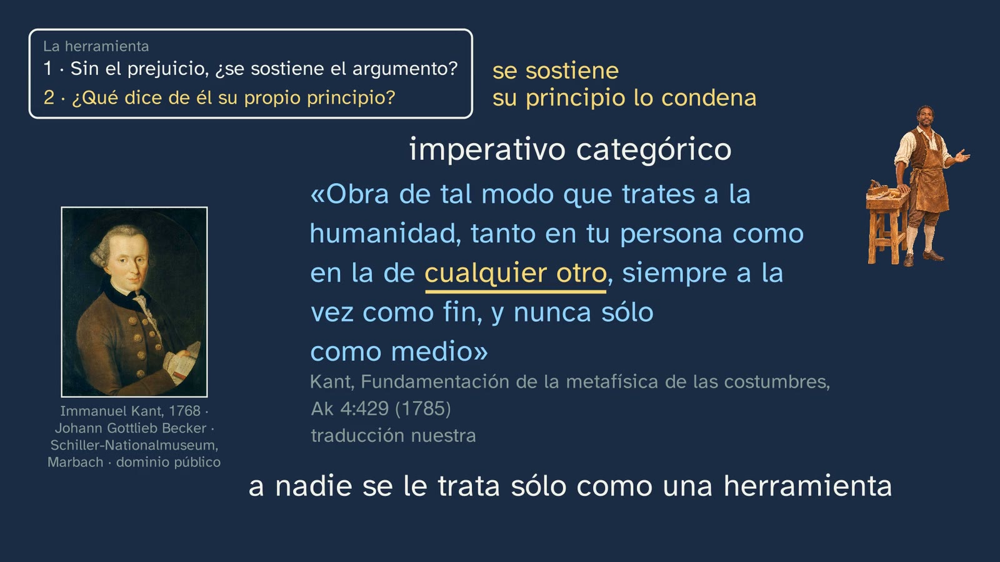

Great philosophers, great prejudices
In a nutshell
The class answers one question: what do we do with a great philosopher who had great prejudices? It starts with two dates. In 1734, an African, Anton Wilhelm Amo, defended a philosophy thesis in Germany; thirty years later, Kant wrote that no African with talent had ever been found. Do we throw them out entirely, or do we excuse them because it was their time? Students predict, and the class answers in four steps:
- First, the case and the word. The real title page of Amo's thesis, signed «African from Guinea» (1:56). Hume, in a note of 1753, suspects that Black people are naturally inferior and brushes off Francis Williams, an educated Jamaican; Kant, in 1764, quotes him, exaggerating him, and agrees with him (2:56). A prejudice is a «prior and tenacious opinion, generally unfavourable, about something that is poorly known» (3:57): prior, because you hold it before looking; tenacious, because it doesn't change when you look. Hume touched up his note twice, and the suspicion stayed.
- The trap, with its name. Kant tells how a Black carpenter said something that perhaps deserved some thought, and dismisses it because of his skin (4:25). He doesn't discuss what he said: he looks at who says it. It's the argument against the person, ad hominem (4:58). And the first easy way out, «if Kant had prejudices, nothing he thought is worth anything», is the same trap (5:16).
- The tool: two questions. Without the prejudice, does the argument hold up? What does his own principle say about that prejudice? (5:39). With Kant, his ethics holds up without the prejudice, and his formula of humanity, «any other», condemns it (6:18). With Aristotle and the slaves, it doesn't: the argument was the prejudice (8:17). And the second easy way out, «it was his time», won't do either: in each case, someone in their own time thought differently (6:44).
- The decree's four squares. Ethnicity: Kant and Hume, set against Amo and Beattie. Social: Aristotle and the slaves, set against those he himself quotes; and Valladolid, in 1550, with Sepúlveda and Las Casas. Gender: Rousseau, set against his own principle of freedom, Wollstonecraft and Poullain. Age: Aristotle's Rhetoric and Callicles, set against Epicurus and the question of a six-year-old child. The open question turns everything round: which prejudice of ours will people see clearly two hundred years from now?
Aim. By the end, students will be able to recognise documented examples of social, gender, ethnic and age discrimination in classical authors, and the voices that already contradicted them in their own time, and to separate the prejudice of the period from the argument that deserves discussion.
The two questions are a practical rule, the channel's own, not any author's thesis. They neither absolve nor condemn anyone: they examine arguments. That's why the class gives both results, «sometimes yes, sometimes no» (13:53), and ends with the tool turned on ourselves.
The words.
- Prejudice. Sense 2 in the Diccionario de la lengua española (RAE and ASALE, 24th ed.), word for word on screen (3:57). It comes from the Latin praeiudicium, «prior judgement». It says «generally unfavourable»: there are also favourable prejudices, and one comes up in the class, the one that a great philosopher must be right (1:44).
- Argument against the person, or ad hominem. Judging what is said by who says it (4:58). Who is speaking does matter when deciding whether to trust a testimony, for example if they are an interested party; it doesn't matter for knowing whether an argument holds (mistake 5).
- Principle. The general rule the author himself defends: in Kant, the formula of humanity; in Rousseau, freedom. Question two sets it against his prejudice.
- The four squares. The decree's: «social, gender, ethnic and age» discrimination. The board labels them with the voice's words: «other peoples», «slaves», «women» and «age». Slavery is the social case (7:37), and Sepúlveda's sentence crosses three squares at once (9:08).
- Ethnicity and «other peoples». The voice and the board say «other peoples»; the decree's word is «ethnicity». Hume's and Kant's words only appear inside their quotations.
- Slave by nature. Aristotle's term (Politics I 5): the one who «understands reason, but does not have it» (7:37). He himself distinguishes it from the slave «by law», the prisoner of war (see «To go further»).
- Categorical imperative and formula of humanity. The voice names them (5:53). The «merely» matters: Kant doesn't forbid making use of others, but treating them merely as a means (in German, bloß).
- «Indians». The word of the time. The voice puts it like this: «the peoples of America, whom they called Indians» (8:34).
Curriculum
Royal Decree 243/2022, Philosophy (consolidated text in the BOE). Both pieces of knowledge are from block A, «Philosophy and the human being», section 1, «Philosophical reflection on philosophy itself». The minutes are those of the video.
| Element | What the decree says | Where it is worked on |
|---|---|---|
| Basic knowledge (block A.1) | «Social, gender, ethnic and age discrimination in the philosophical tradition.» | The whole class: ethnicity (1:56 to 7:14), social (7:37 to 9:53, with Valladolid and its sentence of three prejudices), gender (9:53 to 12:10) and age (12:10 to 13:53). Exercises 1 (gender) and 2 (social) |
| Basic knowledge (block A.1) | «Basic methods and tools of the philosopher: the use and critical analysis of sources; […] argumentative thought and dialogue […].» | Every quotation with its work and its place on screen, and three real documents (Amo's thesis, the Emile and Poullain's book). The tool (5:39). Exercise 3 |
| Specific competence 2 | «To search for, manage, interpret, produce and correctly transmit information on philosophical questions through the contrasted and safe use of sources, and their rigorous use and analysis […]» | Exercise 3, checking a quotation in its work. And two cases of a distorted source, for teachers: Kant exaggerates Hume (2:56) and tells Labat's story second-hand (4:25) |
| Specific competence 3 | «To use and assess arguments and argumentative structures appropriately […] and to avoid dogmatic, fallacious and biased ways of holding opinions and hypotheses.» | The ad hominem, with its mechanism in three boxes (4:58), and in both directions (5:16). «It was his time», taken apart with dates (6:44) |
| Specific competence 6 | «To understand the main philosophical ideas and theories of the most important thinkers, men and women, through the critical and dialectical examination of them and of the fundamental problems they respond to […]» | Kant (5:53), Aristotle (7:37 and 12:10), Rousseau (9:53) and Epicurus (13:14), each with their text; Amo, Las Casas, Wollstonecraft and Poullain, with theirs |
| Criterion 2.1 | «To demonstrate a practical knowledge of the elementary procedures of philosophical research through tasks such as the identification of reliable sources, the efficient and safe search for information, and its correct organisation, analysis, interpretation, evaluation, production and communication, both digitally and by more traditional means.» | Exercise 3 and the activity's other option, quotation detectives |
| Criterion 3.3 | «To recognise the importance of cooperation, commitment to the truth, respect for plurality and the rejection of any discriminatory or arbitrary attitude, applying these principles to argumentative practice and to dialogue with others.» | The whole class, and the activity: the verdict, on the argument and not on the person |
| Criterion 6.2 | «To acquire and demonstrate a meaningful knowledge of the philosophical ideas and theories of some of the most important thinkers, men and women, in history, through their application and critical analysis in the context of the individual or collective practice of philosophical inquiry.» | The two questions, applied to Kant (6:18), to Aristotle (8:17) and, by the students, to Rousseau (10:20). The activity |
Also criterion 3.2. The ad hominem is its textbook case: «To detect and avoid dogmatic, fallacious and biased ways of holding opinions and hypotheses, explaining the nature or mechanism of those biases and fallacies». The three boxes (4:58) are that mechanism, drawn.
The decree's method. The introduction to the subject wants to redress «the marginalisation and historical concealment of women, or the cultural prejudices of an ethnocentric, racist or anthropocentric kind» that «may have weighed down the development of the discipline until recent times». The class doesn't do this with a list of scandalous sentences, but with a tool: each prejudice, with its text and its place, and beside it someone who in their own time thought differently. Anthropocentrism isn't part of this class.
The depth of year 1. A first view: four cases and a tool that can be repeated on one's own. The authors come back throughout the course with their work; here, what matters is the method.
What students need to bring.
- From class 1: philosophy is critical (it's the retrieval question, 1:34). And the warning given there: in Aristotle, «free» is the opposite of «slave», and he defended slavery. Today that is followed up.
- From class 3: the women philosophers on the timeline. They aren't repeated here: Wollstonecraft is added and, in exercise 1, Sor Juana.
- From class 5: the all-the-data test, in the solutions (0:31).
- From lower secondary (ESO): telling an opinion from a piece of data. It's the only thing taken for granted.
What the regions add (contrast only, according to the topic sheet, read in their official gazettes):
| Region and regulation | What it adds | Where the class covers it |
|---|---|---|
| Andalusia · Order of 30 May 2023, BOJA no. 104, 02/06/2023 | Within discrimination, «Philosophy and social condition», women, «Philosophy and ethnocentrism» and «Philosophy and childhood» | Social condition, in the slaves (7:37) and in the craftsman of exercise 2; women (9:53); ethnocentrism (1:56 and 8:34); childhood (13:30) |
| Galicia · Decree 157/2022, DOG no. 183, 26/09/2022 | «Philosophy and Eurocentrism»; «Philosophy and childhood: childhood as a propitious moment for philosophical experience» (in Galician in the original) | Valladolid and Las Casas (8:34 to 9:53); the question of the six-year-old child (13:30) |
| Madrid · Decree 64/2022, BOCM no. 176, 26/07/2022 | «Philosophy and childhood: play, wonder and philosophy. The importance of learning to think»; «Philosophy as a critical review of its own tradition», without detailing discrimination | The critical review is the whole class; childhood, at 13:30 and in «To go further» (Matthews and Lipman) |
What teachers may miss, and where it is.
| Content | Who asks for it | Where it is |
|---|---|---|
| Other philosophical traditions | Galicia («Eurocentrism»); the Valencian Community («decolonisation») | Class 3: other traditions also did philosophy. Here, Amo and Las Casas |
| Women philosophers | The decree (introduction) and several regions | Class 3, with the timeline. Here, Wollstonecraft; Sor Juana, in exercise 1; Olympe de Gouges and Simone de Beauvoir, in «To go further» |
| Aristotle's misogyny | It's what almost all the textbooks include | It isn't in the voice: the class uses Aristotle for slaves and for age. His texts, with their lines, in «To go further» and on card B of the activity |
| Old age | No region and no textbook; it fits the letter of the decree («age») | Here (12:10 to 13:30): a contribution of our own. Beauvoir, in «To go further» |
Where the textbooks cover it. Of the Spanish textbook projects we compared, with their unit 1 at hand, only two give this knowledge a section of its own; the rest, mentions, boxes or timelines with women philosophers. None reads «age» as old age, and only two deal with childhood. And none examines the prejudices of the great authors with their texts, beyond Aristotle's misogyny. What this class adds: each text with its place, age from both sides and a tool that can be applied.
How the class is built
Video chapters
Sixteen minutes (16:14), in nine chapters. Javier appears on camera four times: when he says hello (0:00), with the hook (0:19), halfway (7:14) and when he says goodbye (16:04). The thread is a box, «The tool», with two lines (5:39): it stays at the top, small, and each time it's used the relevant line lights up (6:18, 8:17, 9:23 and 10:20), until the recap (13:53), with «sometimes yes» and «sometimes no». The two easy ways out have their drawing, a bin and an hourglass (3:40), and each is crossed out in orange when it falls (5:16 and 6:44). And the decree's four squares (7:21) fill up with who had the prejudice and, below, with who thought differently in their own time; at the end, beside them, a fifth, empty square, «today» (15:36).
| Chapter | What happens | Why |
|---|---|---|
| What we'll see (0:00) | Javier says hello; the topic map, with the sixth class boxed (0:04). Hook to camera (0:19): in 1734, an African defends a philosophy thesis in Germany; thirty years later, Kant writes that no African with talent had ever been found. | A question with its who, its when and its where. The two facts, without adjectives: students see the clash for themselves. |
| Solutions to the previous class (0:31) | The three from class 5, each with its exercise and its drawing (0:31, 0:55 and 1:18). Retrieval (1:34): what did it mean that philosophy is critical? The answer (1:44), with an addition: «nor because a great philosopher says so». | Spaced practice. The addition is today's thesis. |
| An African in Wittenberg (1:56) | The real title page of the thesis, with «GVINEA-AFER» marked and translated (1:56). A ribbon of his life, each milestone as it's said (2:11). Stop and think (2:41; the pause, at 2:51): why did he sign like that? Hume and Kant, with their portraits, their dates on a timeline and their sentences (2:56). Over Hume and Kant, a dashed line, «no record that they knew of Amo», and Francis Williams, with his portrait (3:23). Predict (3:40; the pause, at 3:52): the bin, «throw them out entirely», or the hourglass, «excuse them: it was their time». | Before the prejudice, the person who disproves it: the class starts with Amo's work, not with Kant's sentence. |
| What a prejudice is (3:57) | The definition, typed out; «prior: before looking» and «tenacious: doesn't change when you look»; «Hume touched up his note twice» and «and the suspicion stayed». The illustrated carpenter, with a speech bubble of dots; a missionary's book, and Kant, who knew of it second-hand; his sentence (4:25). Three boxes: what is said, who says it, therefore (4:58); the arrow from the third to the second, and the name: ad hominem. | The mechanism is seen before it has a name. What the carpenter said stays as «…»: here it doesn't matter (see «To go further»). |
| Two questions (5:16) | The same three boxes, with Kant in place of the carpenter; the bin is crossed out (5:16). The tool (5:39). The formula of humanity, typed out (5:53). The two questions, with «any other» marked and the carpenter coming back: «his principle condemns it» (6:18). The hourglass and the timeline: Amo, 1734; Beattie, 1770, with his portrait and his sentence; the hourglass is crossed out (6:44). Javier, halfway (7:14). The four squares, with the voice's words: other peoples, slaves, women and age (7:21). | The easy way out falls with the same figure as the prejudice, because it's the same trap. The tool makes its debut where the answer is «yes». |
| From Athens to Valladolid (7:37) | Aristotle, as imagined by Hayez, and his quotation (7:37). Those who, by his own account, thought differently, with an illustrated group under a portico (7:56). Question one (8:17): the key sentence falls and leaves its gap, and what's left is «the argument was the prejudice». «A prejudice with a great name behind it is dangerous»; Valladolid, 1550: the junta's question; Sepúlveda, in Maea's drawing, and his sentence (8:34); its three pieces, each with its square (9:08). Las Casas, at the junta, at the lectern, with his portrait (9:23): question two; cities, laws and government; his sentence; «verdict: none on record». | The same tool gives the opposite result. And Valladolid shows why it matters: a prejudice with a great name behind it was used to argue over a war. |
| Rousseau and Wollstonecraft (9:53) | 1762: the Emile, with its real page and the sentence marked (9:53). The same year, The Social Contract (10:20); a line joins the two quotations; stop and think, with question two (the pause, at 10:39). The answer (10:45): «free» is marked and the quotation on education is crossed out. Wollstonecraft, in Opie's portrait, Rousseau's sentence and hers. The role she was given, what she chose, and a question (11:18; the pause, at 11:42). Poullain, 1673, with a real page (the 1691 edition) and his note; his title page, «se défaire des Préjugez» (11:47). | Here students ask question two before anyone else. Wollstonecraft arrives with her three pieces: the role she was given, what she chose and an open question. |
| Is there an age for thinking? (12:10) | The girl and the boy, illustrated; the sentence about young people, on its own, with «Who said it?»; its author; «for the orator»; the older man and «they assert nothing with certainty (…) and always add "perhaps"»; the speech bubble «you're young, so you're wrong» (12:10). Callicles (12:47). No hints (13:01; the pause, at 13:08). Epicurus, with the pair and the older man, who pulse as they're named (13:14). The question of a child of about six, and Descartes (13:30). | From both sides. The sentence about young people goes without its author, so that students judge it before knowing whose it is. |
| And what don't we see? (13:53) | Let's recap (13:53): the definition, the four squares with who had the prejudice and who thought differently, and the box with «sometimes yes» and «sometimes no». Three exercises (14:50). The open question (15:36; the pause, at 15:48), with the fifth square. Class 7 (15:54). Goodbye (16:04): neither throw it all out, nor swallow it whole. | The solutions open class 7. |



A plan for a 50-minute lesson
Designed so that the activity comes when students have already seen the four squares, and before the recap.
| Minutes | What happens |
|---|---|
| 0–3 | No video: «Before you start», on the worksheet. Someone you admire, and a prejudice about your age. |
| 3–11 | Video from 0:00 to 5:16 (if the solutions to class 5 have already been corrected, skip from 0:31 to 1:34). Stop at 2:51: why did he sign like that?, in one sentence. Stop at 3:52: the prediction, in writing. |
| 11–14 | Video from 5:16 to 7:37. Kant's row in the table of the tool. |
| 14–17 | Video from 7:37 to 9:54. Aristotle's row, and Sepúlveda's sentence in its three squares. |
| 17–21 | Video from 9:53 to 12:09. Stop at 10:39: one minute in pairs, asking Rousseau question two, before hearing the answer. |
| 21–24 | Video from 12:10 to 13:51. Stop at 13:08: what would you answer Callicles?, in writing. |
| 24–39 | The activity: the two questions, in groups (below). |
| 39–43 | Video from 13:53 to the end (16:14). The open question, aloud or in the philosophical journal. |
| 43–50 | «At the end of the class», on the worksheet. The exercises, for homework. |
If there are two lessons, cut it in half at 7:14, with Javier on camera: «judging what is said by who says it is not an argument». The second lesson starts with the four squares (7:21) and leaves more time for the activity and for Callicles.
If time is short, the whole video, with its stops (about 22 minutes), and the activity with a single card, all together, on the board (10 minutes).
If the open question catches fire (15:36), it's worth steering it towards how a prejudice is recognised, not towards pointing out the prejudice of a particular group or of anyone in the class. And if «was Kant a racist?» comes up, see «To go further»: what he wrote in 1764 is disputed by no one; whether he changed his mind later is disputed. The teacher moderates and doesn't give a verdict.
Typical mistakes and how they are handled
These are frequent confusions the design anticipates; as far as we know, there is no didactic research on them as solid as there is in the sciences.
- «If a great philosopher had prejudices, nothing he said is worth anything.» This is the first easy way out, and the class takes it apart with the same figure as Kant's prejudice (5:16): it judges what is said by who says it. It has some truth: a prejudice can be at the centre of a theory, as in Aristotle and the slaves (8:17). But that is discovered with question one, not decided beforehand.
- «If he's a great philosopher, he must be right.» The favourable prejudice, the one the class rules out from the retrieval onwards (1:44): philosophy doesn't accept something because a great philosopher says so. It's the same mistake as number 1, from the other side.
- «It was his time.» It explains, but it doesn't excuse: in each case, someone in their own time thought differently (6:44, 7:56 and 11:47). Aristotle himself reports that on slavery «some think one way and others another, even among the wise» (Politics I 6, 1255a12). Watch out for the opposite mistake: those who thought differently didn't think like us today in everything. Beattie reasons within the framework of his time, that of «barbarous» and «civilised» peoples; Labat's carpenter defended keeping women in subjection; and Plato's equality had a clause (card A of the activity).
- «Separating the prejudice from the argument serves to save the author.» The tool doesn't absolve. With Aristotle, when the prejudice is removed no argument is left (8:17). And with Kant, what holds up is his ethics, not his 1764 text.
- «Everything said about a person is ad hominem.» No. Dismissing an argument because of who makes it is ad hominem; checking whether a testimony is reliable is source criticism, and it's what competence 2 asks for. The only detailed account of how Valladolid went was printed by Las Casas, who was a party to it; Edward Long, who identified Francis Williams, was himself a racist author. Knowing this refutes nothing, but it obliges us to cross-check. And saying that Kant had prejudices is a fact; it becomes ad hominem if it's used to avoid examining his ethics.
- «Kant was a racist, so his ethics is racist», or the other way round, «Kant changed his mind, so he wasn't one». Both go beyond what is known. What he wrote in 1764 is disputed by no one; whether he abandoned it in the 1790s is disputed among specialists (see «To go further»). What the class claims is narrower: his principle, «as he wrote it», condemns his prejudice (6:18). It's the letter of the text, not Kant's intention.
- «Aristotle says young people know nothing.» Two confusions. The Rhetoric portrays what people usually think of each age, so that the orator knows how to address them, and doesn't describe each person (12:10). And «they believe, but know nothing» is said of older people, as the opposite of the young: they assert nothing with certainty and always add «perhaps» (Rhetoric II 13, 1389b16–19). It becomes prejudice when it decides for someone before hearing them.
- «A prejudice is any negative opinion.» The definition asks for more: prior, tenacious and about something poorly known. A negative judgement made after looking carefully, and that changes if new data arrive, isn't a prejudice. And there are favourable prejudices (mistake 2).
- Reading Sor Juana literally (exercise 1). «What can we women know, but kitchen philosophies?» is irony: she is mocking the place assigned to her; it isn't modesty.
- «If it's in his book, he thought it.» An author can quote someone else's verse, put words in a character's mouth or report what others say. Callicles is a character in the Gorgias, and Plato refutes him (12:47); the objection at 7:56 comes from «others», according to Aristotle. Before attributing an idea, you have to see who is speaking in the text. It's half of exercise 3.

Questions and solutions
In the video
- We said that philosophy is critical. What did that mean? (1:34; no pause, and the answer at 1:44). That it doesn't accept something because many people say it, or because it has always been said. The class adds today's point: nor because a great philosopher says so. What will come up: «that it criticises everything», in the sense of always disagreeing. Criticising is examining the reasons, not rejecting.
- He arrived, probably, as a gift. And, once a philosopher, he signed his thesis like this: African from Guinea. Why do you think he did it? (2:41; the pause, at 2:51). Open: the class doesn't give the answer, and neither does this sheet. Any reason with its why is fine, if it rests on what has been seen: the contrast between arriving as a gift and signing as a philosopher, with his origin. Careful: «probably as a gift» is the majority hypothesis, not a certain fact (see «To go further»).
- Predict: what do we do with Kant and with Hume? Do we throw them out entirely, with everything they thought? Or do we excuse them, because it was their time? (3:40; the pause, at 3:52). Any reasoned answer is fine. The class answers neither (5:16 and 6:44). It's worth valuing anyone who proposes separating. What will come up: both, in equal measure, and a mix, «throw out the bad and keep the good». That's almost the tool, but without saying how to tell one from the other: that's what the two questions provide.
- Question one: without the prejudice, does his ethics hold up? Question two: what does his principle say about his prejudice? (6:18; no pause). It does hold up: to say that nobody is merely a tool, no skin colour is needed. And his principle says «any other»: the carpenter too. Careful: «as he wrote it» is exact, and it's best not to go further (mistake 6).
- Ask Aristotle question one (8:17; the answer, in the same block). It doesn't hold up: if you remove that there are those who «understand reason, but do not have it», no argument is left. What will come up: «but in his time…». That's the other way out, and the class has already answered it with the previous block (7:56).
- Now you. Ask him question two: what does his principle say about his prejudice? (10:20; the pause, at 10:39; it's worth pausing). His principle is freedom, «man is born free» (The Social Contract I 1), and an education made to please someone else doesn't educate for being free (10:45). For a high mark: the principle is also in the Emile itself: in book II, Rousseau writes that «the first of all goods is not authority, but freedom», and calls it his «fundamental maxim» (t. I, pp. 167–168); in book V, that girls «feel themselves made to obey» and must learn early to «bear even injustice» (t. IV, pp. 48–49). What will come up: «Rousseau was a hypocrite». That's judging him, not his argument; question two asks you to say what clashes with what.
- What does it take to step out of the role you're given? (11:18; the pause, at 11:42). Open. Wollstonecraft gives a case, not a recipe: with few options, she did the three jobs open to her and, when the last one ended, she went off to live by writing. It comes back in «For you», and it's better in writing: nobody has to tell their life story.
- Now it's your turn, with no hints: what would you answer Callicles? (13:01; the pause, at 13:08). Open. The class then gives Epicurus (13:14), which isn't a refutation, but another position. Good answers: that «giving him a few blows» isn't an argument, but force; that it's today's trap, judging what someone says by who they are, here by their age; or Epicurus's answer, in other words. Careful: Callicles is a character, and Plato puts this in the mouth of an opponent in order to take it apart.
- Which of our prejudices today will people see clearly two hundred years from now? (15:36; the pause, at 15:48). See below, «Keep thinking».
From the student worksheet
- Before you start. There's no right answer: it's their starting point. At the end it's worth comparing what they would do with that person's work against the two questions, and their definition against the dictionary's. The prejudice about their age comes back at 12:09. Nobody has to say aloud whom they admire.
- Your memory. That philosophy doesn't accept something because many people say it, or because it has always been said. Today this is added: nor because a great philosopher says so.
- Amo. He was born around 1703 on the coast of what is now Ghana, and came as a child to the court of a German duke, probably as a gift. He studied in Halle and in Wittenberg, and his 1734 thesis argues that what feels is not the mind, but the living body. Afterwards he taught at the university. He signed it «African from Guinea»: on the title page, in Latin, «GVINEA-AFER».
- Stop and think. See above.
- Hume and Kant. Hume wrote in a note, in 1753, that he suspected Black people were naturally inferior to whites. Kant, in 1764, quoted him and agreed with him. «Exaggerating him» means that he made him say more than he said: according to Kant, Hume challenges anyone to give a single example of a Black person with talent, and in Hume's note there is no challenge.
- Francis Williams. An educated Jamaican, of whom Hume had heard. He dismissed him like this: he is probably admired for very slender accomplishments. And there's no record that Kant or Hume knew of Amo.
- Your prediction. See above.
- The prejudice. «A prior and tenacious opinion, generally unfavourable, about something that is poorly known.» Prior: you hold it before looking. Tenacious: it doesn't change when you look. Hume's is tenacious because he heard about an educated Jamaican, touched up his note twice, in 1770 and in 1777, and the suspicion stayed.
- The carpenter. Kant admits that what he said perhaps deserved some thought, and dismisses it because he was Black «from head to foot». He doesn't discuss what he said: he looks at his skin. It isn't an argument, because the skin of the person speaking says nothing about whether they're right. It's the argument against the person, ad hominem.
- The same trap. «If Kant had prejudices, nothing he thought is worth anything» also judges what is said, his philosophy, by who says it, Kant, who had prejudices. It's the same three boxes, with different words in them.
- The table of the tool. Kant: one, it holds up (nobody is merely a tool, and that needs no skin colour); two, his principle says «any other», the carpenter too, and it condemns his prejudice. Aristotle and the slaves: one, it doesn't hold up, because the argument was the prejudice; question two isn't asked of him by the class, but by Las Casas, against the use Sepúlveda made of him (9:23). Rousseau: two, his principle, freedom, clashes with an education designed to please; question one isn't asked by the class. For a high mark, for whoever tries it: without the prejudice that women are made for men, no plan of education for Sophie is left, because all of it is designed «in relation to men».
- «It was his time». Amo defended his thesis in 1734, thirty years before Kant, and in 1770 James Beattie answered Hume in writing. That a prejudice was common doesn't mean it couldn't be seen.
- Aristotle. A slave by nature is «the one who understands reason, but does not have it»; and for them, he says, being slaves is beneficial and just. He himself reports that others, in his time, said that having slaves is against nature: that it is the law that makes one man a slave and another free, but that by nature they differ in nothing, and that for that reason it isn't just, because it is by force.
- Valladolid. What was being debated was whether it was just to make war on the peoples of America. Sepúlveda, leaning on Aristotle, wrote that they were as inferior to the Spaniards as children to adults and women to men: a prejudice of ethnicity, one of age, because he uses children as the measure of what is worth less, and one of gender. Las Casas answered him with Aristotle himself: the Indians have cities, laws and government. And he summed it up like this: all the nations of the world are men. There's no record that the judges gave a verdict, and Sepúlveda's book wasn't printed in his time.
- Rousseau. In the Emile: the whole education of women must be planned in relation to men; to please them, to be useful to them, to raise them when small, to care for them when grown. In The Social Contract, the same year: man is born free, and everywhere he is in chains.
- Stop and think. See above.
- Wollstonecraft. Rousseau had written, mockingly, that the more women resemble men, the less they will govern them. She replied: this is the very point I aim at; I do not wish them to have power over men, but over themselves. A woman without a fortune was left with marrying, if she could, or being a lady's companion, a teacher or a governess. She did all three jobs, and in 1787, when the last one ended, she went to London to live by writing.
- Poullain. In 1673 he wrote that the difference of sex lies in the body, not in the mind, and in a note in his book one reads «the mind has no sex». The date matters because it's almost ninety years before the Emile: once again, it wasn't «his time». His title speaks of freeing oneself from prejudices.
- Age. Aristotle wrote it, in the Rhetoric, so that an orator would know how to speak to each age: he portrays what people usually think, not each person. It becomes prejudice when it decides for you before hearing you: you're young, so you're wrong. For a high mark: that he says the opposite of older people, and that can also become prejudice.
- Callicles. Philosophy is fine when you're young, in moderation; but a man who is already older and still philosophises should be given a few blows. What you would answer him: see above.
- Epicurus and the child. «Let no one, while young, delay philosophising, nor, while old, grow weary of philosophising», because no one is too young or too old for the health of the soul. The child, about six years old, asked how we can be sure that everything is not a dream: it's Descartes's doubt in his Meditations. For a high mark: the child didn't stop at the question, and gave a reason (see «To go further»).
- The four squares. Ethnicity: Kant and Hume (Hume's suspicion, Kant's sentence about the carpenter), set against Amo and Beattie. Social: Aristotle (slaves by nature), set against those he himself quotes, and Las Casas. Gender: Rousseau (the education of women), set against Poullain and Wollstonecraft. Age: «you're young, you don't know» (the Rhetoric) and «you're old, it's not your turn any more» (Callicles), set against Epicurus. Sepúlveda crosses three squares with one sentence.
- For you. They have no solution: they're for thinking about, and can go into the philosophical journal. Better in writing: nobody has to say anything about their life aloud.
Practice (the solutions open class 7)
-
Sor Juana Inés de la Cruz wrote, in 1691: «Had Aristotle cooked, he would have written much more». Which prejudice is she answering, and with what argument?
- The prejudice. That women only know about cooking. She puts it in her own mouth, ironically: «what can we women know, but kitchen philosophies?». It's a gender prejudice.
- The argument. While cooking she has discovered «natural secrets»: that an egg holds together and fries in lard or oil, and falls to pieces in syrup; that the tiniest amount of water in which a quince has been is enough to keep sugar runny. In the kitchen, too, nature is observed.
- The conclusion. If you learn from nature in the kitchen, whoever has never cooked knows less, not more. That's why Aristotle, had he cooked, «would have written much more». She turns the prejudice round: it isn't the kitchen that limits what is known.
- The place: Reply to Sor Filotea de la Cruz, signed on 1 March 1691; in the Madrid edition of 1700, p. 37.
Criteria: the prejudice, with its square; the argument, with an example from the kitchen or with its idea; and that the sentence is a conclusion, not a stray joke. For a high mark: the irony; or that in the same letter she also answers the «let women keep silent in the church», which she reads as a ban on preaching from the pulpit, not on studying or writing; and that silence, she adds, also applies to men who aren't prepared (pp. 41–49). What will come up: taking «kitchen philosophies» literally, as if she accepted the prejudice (mistake 9). And answering only with the square, «it's sexism», without the argument.
-
Aristotle wrote that the best city will not make the craftsman a citizen. Ask it the two questions. Hint: for him, the human being is an animal made to live in the city.
- Why he says it. The sentence is from Politics III 5, 1278a8. He gives the reason in VII 9: in the best-governed city, the citizens must not live the life of a craftsman or a merchant, «because that life is ignoble and contrary to virtue»; and leisure is needed, for virtue to arise and for politics (1328b37–1329a2).
- Question one: without the prejudice, does it hold up? The prejudice is that working with your hands makes a person ignoble and worse at virtue. If it's removed, a practical reason is left: politics requires time. But that reason doesn't call for excluding the craftsman, but for him to have time. What turns the lack of time into exclusion is the prejudice. It holds up, at most, halfway.
- Question two: what does his principle say? The one in the hint: the human being is made to live in the city. The craftsman is a human being; therefore, by Aristotle's principle, he too is made for the city. And for him living in the city, in the full sense, is taking part in it, which is exactly what he denies the craftsman. His principle clashes with his exclusion.
- And it wasn't his time. He himself reports that it depends on the regime: «in some regime the craftsman and the labourer will have to be citizens» (1278a17–18), and in an oligarchy the craftsman can be one, because many grow rich (1278a22–25).
Criteria: the two questions, separately; in question one, what is removed and what is left; in question two, the principle from the hint applied to the craftsman. For a high mark: that question one gives a halfway result, and why; or the point from 1278a17–18. It's the reasoning that's marked, not whether it matches this one. What will come up: «the craftsman already lives in the city». It's a good objection, and it leads to the heart of the matter: for Aristotle it isn't enough to live in it, and he himself writes that «the class of craftsmen has no share in the city» (VII 9, 1329a19–21). There's the clash. And confusing the craftsman with the slave: Aristotle says that the craftsman has «a kind of limited slavery» (1260a41–b1), but that «no shoemaker» is a slave by nature (1260b1–2).
-
Look up a famous quotation from a great philosopher online, and check whether they really said it: in which work, and where. There are many good answers. The method, in four steps:
- Look for the work, not the quotation. A quotations website without a source isn't a source, and two websites that copy each other aren't two sources. You need the work and the place: book and chapter, the page of an edition, or the numbering specialists use (Bekker's in Aristotle, «1253b20»; the Academy's in Kant, «Ak 4:429»).
- Go to the text. In a digitised edition or in a translation with a name (see «Resources»). Read the sentence on its page, with what comes before and after.
- Look at who is speaking. The author, a character, someone they quote, or «others» they report on (mistake 10).
- Give your verdict. It's theirs and it's where they say; it's in the work, but it isn't theirs or it says something else; or it isn't there.
Four examples, already checked:
- Theirs, and located. «Let no one, while young, delay philosophising…»: Epicurus, Letter to Menoeceus, in Diogenes Laertius X 122 (13:14).
- In the work, but not the author's. «Philosophy is fine when you're young, in moderation» is said by Callicles, a character in the Gorgias (484c–485d), whom Plato refutes. And «silence gives grace to a woman» is a verse that Aristotle quotes and makes his own in Politics I 13, 1260a30, not a sentence of his own making.
- With the opening changed. «That is precisely why I am writing this book: to break the conspiracy of silence» (Simone de Beauvoir, La Vieillesse, 1970, Introduction, p. 8). It circulates in French as «C'est pourquoi j'écris ce livre…»; the original says «Voilà justement pourquoi…».
- Apocryphal. «Reserve your right to think, for even to think wrongly is better than not to think at all», attributed to Hypatia. It isn't in any ancient source: it comes from an almost entirely invented little book by Elbert Hubbard (1908, pp. 82–83), and there she doesn't even say it: her father, Theon, does.
Criteria: the exact work and place; a source that can be opened; who is speaking in the text; and the verdict, with its why. What will come up: stopping at a quotations website, and accepting a quotation because it appears on many websites: that's accepting it «because many people say so» (1:44). A caution. Searching for «great philosophers' quotes» can lead to hate speech without context. If preferred, the teacher gives a starting list: the ones on this sheet, or the class's quotations (Kant, Rousseau, Poullain, Epicurus), so that students repeat the check with their own hands.

To open class 7: the solutions, in brief
What Javier will say (in Spanish) at the start of the next class, in the same tone as this class's solutions (0:31). The first, with the three pieces of a figure from the margins: the role she was given, what she chose and a question.
- «The first asked for Sor Juana's prejudice and argument. The prejudice: that women only know about cooking. That was her role, and she makes fun of it: while cooking, she says, she has discovered secrets of nature, such as that an egg fries in oil and falls apart in syrup. She chose to study and to write, and she defended that choice in writing. And she leaves a question: if you also learn in the kitchen, who decides what each person may know about?»
- «The second asked you to put the two questions to Aristotle's craftsman. His reason: that that life is ignoble and contrary to virtue, and that politics requires time. Without the prejudice, what's left is the lack of time, and that calls for giving him time, not leaving him out. And his principle, that the human being is made to live in the city, also holds for the craftsman.»
- «And the third asked you to check a quotation. For example, one that circulates as Hypatia's: reserve your right to think. It isn't in any ancient source: it comes from a little book from nineteen hundred and eight, and there it's her father who says it. Any quotation will do, if you give the work and the exact place.»
Keep thinking. They were among the brightest of their time, and they did not see their prejudices. Which of our prejudices today will people see clearly two hundred years from now? (15:36; the pause, at 15:48). It has no textbook answer, and neither the video nor this sheet gives its own. Some pointers to guide the debate without closing it:
- How you would look for it. With the class's definition: what do we take for granted without having looked? What wouldn't we change even if we were given data? About whom do we hold opinions without knowing them?
- Where to look. The four squares are the decree's, but they needn't be the only ones: on the board, the fifth square is empty.
- Who isn't heard. In each case there were voices that, in their own time, thought differently. Which voices today do we not listen to? Beauvoir wrote in 1970 that, if the voice of the old were heard, we would have to recognise that it is a human voice.
- The trap. It's easy to see other people's prejudices: from another country, another age, another party. The question says «ours». And nobody points at anyone in the class.
- Being clever doesn't protect you. If the cleverest people of their time didn't see their own, what protects us? The two questions? Listening to those who think differently? Nothing?
- The teacher moderates and doesn't give a verdict. Any answer with its reason is acceptable, if it examines an opinion and not a person.
A classroom activity: the two questions, in groups
About 15 minutes, in groups of three or four, after watching the video up to 13:51. It works on criterion 6.2 (the authors' ideas, «through their application and critical analysis»), criterion 3.3 (the rejection of any discriminatory attitude, applied to argumentative practice) and criterion 2.1 (each text with its place). It's the class's tool, with texts the video doesn't use, and with a twist: the voice «of his time» doesn't always make things better. Like everything practical on the channel, it's a proposal: each teacher adapts it to their group.
Materials: one card per group, from three models that can be repeated. Each one has a text with its exact place, a second sentence that serves for question two and a voice of his time. The translations are literal and checked against the original (see «Sources»).
Card A · gender. Plato, Republic V.
- The text (455d–e; after C. Eggers Lan's Spanish translation): «There is no occupation among those concerning the government of the State that belongs to woman because she is a woman, or to man insofar as he is a man; rather, natural gifts are similarly distributed between both living beings, so that woman shares by nature in all occupations, just as man does; only that in all of them woman is weaker than man.»
- For question two (454d–e; our translation): «If it turns out that they differ only in this, that the female bears and the male begets, we shall not say on that account that it has been shown that woman differs from man in respect of what we are speaking of», that is, in the task of governing.
- A voice of his time: Aristotle, who wrote the opposite: «the temperance of a woman and that of a man are not the same, nor courage nor justice, as Socrates thought» (Politics I 13, 1260a20–23). Socrates is the one who speaks in the Republic.
Card B · age. Aristotle, Politics I 13.
- The text (1260a12–14; our translation): «The slave does not have the capacity to deliberate at all; the woman has it, but without authority; and the child has it, but undeveloped.»
- For question two: there's no second sentence. The three claims are compared with each other: are they all the same? What changes between «undeveloped» and «without authority»?
- A voice of his time: Epicurus, «no one is too young or too old for the health of the soul» (Letter to Menoeceus 122); and Plato, on card A.
Card C · ethnicity. Kant, Toward Perpetual Peace (1795).
- The text (Ak 8:358; our translation): «If we compare with this the inhospitable conduct of the civilised States of our part of the world, especially the commercial ones, the injustice they show in visiting foreign lands and peoples (which for them is the same as conquering them) goes as far as horror. America, the lands of the negroes, the Spice Islands, the Cape, etc., were for them, when they discovered them, lands that belonged to no one, because they counted their inhabitants as nothing.»
- For question two: the 1785 formula of humanity, the one in the class (5:53).
-
A voice of his time, and of today: Amo and Beattie, in the video; and two specialists today who don't agree (see below).
-
Prediction (1 minute). Each student writes, without talking: is there a prejudice here? Where?
- Underline (2 minutes). In one colour, what would be prejudice: a prior and tenacious opinion about something poorly known. In another, the argument.
- Question one (3 minutes). They cross out the prejudice. Is there an argument left? They write down what is left.
- Question two (3 minutes). With the second sentence, or with the comparison on card B.
- Was it his time? (2 minutes). They read the voice of his time. Did it think differently? Better, or worse?
- Sharing (4 minutes). Each group gives its verdict on the argument, not on the author. The others can object, always with a reason.
What to expect.
| Card | Question one | Question two | Was it his time? |
|---|---|---|---|
| A · Plato | It holds up without «only that in all of them woman is weaker»: the conclusion, that aptitudes are distributed between both, doesn't depend on that clause | His principle asks us to look only at the difference that matters for the task. «Weaker in all» is a general claim that his own principle obliges us to check case by case. Just before, in the dialogue, it is granted that «many women are better than many men at many things» (455d) | Here the voice of his time makes things worse: Aristotle goes backwards. Thinking differently isn't being right |
| B · Aristotle | There are three claims. The one about the slave already fell in the video (8:17) | «Undeveloped» is a stage, which passes as one grows up: it isn't a prejudice in itself, and it becomes one when it's used to avoid listening to a young person (12:10). «Without authority», on the other hand, is for him a permanent trait of women | Epicurus, for age; Plato, for women |
| C · Kant, 1795 | There's no prejudice to remove in this text: it condemns conquest | It fits with his principle: treating the inhabitants as if they counted for nothing is treating them merely as a means | Is that enough to say Kant changed his mind? It's an open debate: Pauline Kleingeld holds that he did; Robert Bernasconi, that he didn't (see «To go further»). The group can defend either, with reasons. What he wrote in 1764 is disputed by no one |
Criteria: the prejudice, pointed out and with its why (why it is prior, or tenacious); in question one, what is left, written down; the verdict, on the argument and not on the person; and each objection, with its reason.
What will come up: judging the author, «Plato was a feminist» or «Kant was a racist», and you have to go back to the argument. Crossing everything out, and you have to go back to question one. Accepting the voice of his time just because it is one (that's the twist of card A). On card B, seeing three equal prejudices: the difference between a stage and a permanent trait is what has to be found. And on card C, closing the debate: the teacher doesn't give a verdict.
Another option: quotation detectives (10 minutes, in pairs; it also works for correcting exercise 3). Each pair receives a sentence with its author, and has to find the work and the place in one of the digital libraries in «Resources» or, without internet, in the photocopy of the page the teacher brings. Six starting sentences, already checked, with their solution:
- «Let no one, while young, delay philosophising, nor, while old, grow weary of philosophising» (Epicurus). His: Letter to Menoeceus, in Diogenes Laertius X 122.
- «The mind has no sex» (Poullain de la Barre). His: a marginal note in On the Equality of the Two Sexes (1673), p. 109; in the 1691 edition, the one seen in the video, a footnote on p. 76. It's by a Cartesian, not by Descartes: there's no record that Descartes wrote it.
- «Man is born free, and everywhere he is in chains» (Rousseau). His: The Social Contract (1762), book I, ch. 1.
- «A man who is already older and still philosophises should be given a few blows» (attributed to Plato). It's in the Gorgias (485d), but it's said by Callicles, a character whom Plato refutes.
- «Reserve your right to think…» (attributed to Hypatia). Apocryphal: Hubbard, 1908, and in her father's mouth.
- «To break the conspiracy of silence» (Beauvoir). Hers: La Vieillesse (1970), Introduction, p. 8. The version circulating in French changes the opening.
What matters isn't getting the sentence right, but the path: where you look, what counts as evidence and who is speaking in the text.
To go further: what the class doesn't say aloud
Nuances checked for teachers, in case they come up in class.
- Amo, precisely.
- «Probably as a gift» (2:11) is the majority hypothesis, but it's disputed: Mabe denies it and Abraham proposes others.
- He was born around 1703 (Menn and Smith, 2020; the University of Halle, «um 1703»), and was baptised on 29 July 1707, according to the chapel records cited by the collective book by Knauß and others (2021). Halle's English page says 1708.
- The 1729 disputation on the rights of Africans in Europe (De iure Maurorum) was oral and has been lost: it's known only from a press notice of 28 November 1729, and Monika Firla (2020) believes the text was drafted by his teacher, J. P. von Ludewig. That's why the voice says «defended», and not «wrote» (2:11).
- The 1734 thesis is an inaugural dissertation (Dissertatio inauguralis), not a doctorate. It holds that feeling belongs to the living body, not to the mind.
- He taught at Halle, at Wittenberg and, from 1739, at Jena. The date of his licence at Halle varies with the source: 21 June 1736 or 6 July 1737.
- That Kant or Hume knew of him isn't on record: «Nachweisen lässt sich das nicht», «it cannot be proven» (Völkel, 2021, p. 32).
- The carpenter, in full.
- Kant didn't hear him: he read about him. It's in Jean-Baptiste Labat, Nouveau voyage aux isles de l'Amérique (Paris, 1722), t. IV, pp. 161–162, with the year 1698 in the margin. He was «un Negre Charpentier de nôtre Maison de la Guadeloupe»: a carpenter of the Dominicans' house in Guadeloupe, in the Caribbean. Labat was a Dominican and a missionary in the Antilles.
- In Kant's version, which is a free one, the carpenter answers the missionary, who was reproaching him for how he treated his wives: «You whites are real fools, because first you grant your wives so much and then you complain when they drive you mad» (Ak 2:254–255). In Labat, what he defends is keeping them «dans le respect & la soumission», in respect and submission. It isn't a defence of women, and that's why the class doesn't tell it (4:25): Kant's failing is the same, he doesn't examine what is said. If a student looks up the source, a good finishing touch: there were arguments to rebut him, and Kant used none of them.
- That the carpenter was a slave is likely from the context, but it isn't said on those two pages; best not to claim it. Nor is it established whether Kant read Labat in French.
- In the same paragraph, Kant praises the women of the peoples of Canada: they «really command», they meet and decide on war and peace (Ak 2:255). It isn't a simple text.
- Kant and Hume, precisely. Kant's paraphrase (2:56) exaggerates Hume: in the note there is no challenge, nor does it speak of freed slaves. Kant follows the early version of the note. If page Ak 2:253 is projected, it's worth knowing that it opens with an even harsher sentence, which the class doesn't quote: that Africans have by nature no feeling that rises above the puerile. And Hume's note on Williams goes on with a comparison the class doesn't quote either: he is admired «like a parrot, who speaks a few words plainly».
- Hume's note, in three versions.
- In 1748 the essay had no note. From 1753 to 1768, the early version (in 1753, on p. 291): there «never» was a civilised nation of any other complexion than white, and Williams is admired for «very» slender accomplishments. In 1770 and 1772, an intermediate version: there «scarcely ever» was, and «slender» accomplishments. In the final edition, of 1777, he also removes that «all the other species of men» were inferior. He softens words, but keeps the core. That's what the voice sums up at 3:57: he touched up his note twice, and the suspicion stayed.
- He didn't touch it up «because of» Beattie: his 1770 edition was being printed at the same time as Beattie's book came out, in May. John Immerwahr (1992) presented it as a reply; Aaron Garrett (2000) denies it. Best not to say that Beattie made him change it.
- Francis Williams and Edward Long. Hume's Jamaican is Francis Williams: so say Edward Long (The History of Jamaica, 1774, vol. II, p. 477, «Mr. Hume, who had heard of Williams…») and the Victoria and Albert Museum, which holds his portrait (P.83&A-1928). Long was himself a racist author: he shouldn't be presented as a defender of Williams. The museum's record misdates Hume's note, to 1748, when it didn't exist. And it says something worth knowing: Williams was born around 1690, owned slaves and was not an abolitionist.
- Beattie, with his framework. An Essay on the Nature and Immutability of Truth (Edinburgh, May 1770), part III, ch. II, pp. 479–484. He copies Hume's note in its early version, and cuts it before the parrot; his sentence in the class comes right after (pp. 479–480; 6:44). His arguments: the inhabitants of Great Britain and France were as «savage» two thousand years ago as those of Africa and America are today, and saying of a nation now barbarous that it can never be civilised is like saying of an infant that he can never become a man (p. 480); Peru and Mexico disprove that there was never another civilised nation (p. 481); and supposing a slave inferior because he doesn't distinguish himself is like supposing any private European inferior because he hasn't raised himself to royalty (p. 482). He also imagines the visit of «a Lucian or a Voltaire from the coast of Guinea» (pp. 483–484): an imaginary visitor, not a real traveller. He argues within the framework of his time, that of barbarous and civilised peoples: he isn't a present-day anti-racist (mistake 3).
- Did Kant change his mind?
- What he wrote in 1764 is disputed by no one. What is disputed is whether he abandoned it in the end. Pauline Kleingeld holds that he did: in the 1790s, Kant «radically changed his mind», restricts the role of the concept of race and drops his hierarchy («Kant's Second Thoughts on Race», The Philosophical Quarterly 57, no. 229, 2007, pp. 573–592). Robert Bernasconi replies («Kant's Third Thoughts on Race», 2011, pp. 291–318) that this idea is comforting for those who want to defend Kant, but isn't credible; J. Govedarica and M. Smajević Roljić sum up the exchange (2024). Kleingeld answered him in 2014. Others, such as Charles W. Mills or Huaping Lu-Adler, hold that his racism is intertwined with his system.
- The texts usually cited in favour of the change: Toward Perpetual Peace (1795), Ak 8:358–359, against the injustice of States that confuse visiting with conquering (card C), and with the sugar islands as the seat of «the cruellest slavery»; and the Metaphysics of Morals (1797), Ak 6:266, which calls founding colonies by force or by a fraudulent purchase «reprehensible».
- On women, Kleingeld (2019) admits that Kant didn't abandon his sexism. In the same 1764 book he writes that a woman with a head full of Greek, like Madame Dacier, or who carries on thorough disputes about mechanics, like the Marquise du Châtelet, might as well have a beard too (Ak 2:229–230). In 1747 he had seriously debated the Marquise's arguments, and called her eloquent (Ak 1:45).
- What the class says is narrower, and therefore safer: his principle, «as he wrote it», condemns his prejudice (6:18). «Eines jeden andern», «of any other», is the letter of the text. And the «merely» (bloß): it doesn't forbid making use of others, but treating them merely as a means. In 1797 he says it even more clearly: «Die Menschheit selbst ist eine Würde», «humanity itself is a dignity» (Ak 6:462).
- If the page of the Groundwork (Ak 4:429) is projected, it's best to stay with lines 10 to 12, those of the formula: the following ones give an example the class doesn't deal with.
- Aristotle, with his nuances.
- He records the objection (1253b20–23; 7:56) and grants it part of the truth: there are slaves «by law», prisoners of war, and that slavery can be unjust (1255a3–12). But he maintains slavery «by nature» (1255a1–3). And he adds that «some think one way and others another, even among the wise» (1255a12).
- Who those «others» were, he doesn't say, and attributing them to a particular sophist isn't verified. What is preserved, in a scholium on the Rhetoric (I 13, 1373b18), is a sentence by the sophist Alcidamas: «God left everyone free; nature made no one a slave». It isn't in the manuscripts of the Rhetoric, but in that ancient note.
- He himself admits that nature fails to mark who is who: «the opposite often happens: some slaves have the bodies of free men, and others, the souls» (1254b27–34, after M. García Valdés's Spanish translation). And he reports that the Greeks «do not want to call themselves slaves, but the barbarians» (1255a28–29): the social and the ethnic prejudice, together.
- More nuances from the same author: slaves should be admonished «even more than children» (1260b5–7), and it's advisable to hold out freedom to all of them as a reward (VII 10, 1330a32–33). Neither a monster nor ahead of his time.
- Women, in the Politics: «between male and female, by nature, one is superior and the other inferior, one rules and the other obeys» (I 5, 1254b13–14, after M. García Valdés's Spanish translation), with a nuance in I 12, «unless in some case it is constituted contrary to nature» (1259b1–3). Fred Miller, in the Stanford Encyclopedia, calls it an «unsupported» claim. In I 13 (1260a12–14), the woman deliberates «without authority» and the child, «undeveloped» (card B): what ákyron, «without authority», means is debated by specialists, who read it as something in her soul or as something about her place in the city. Two lines later he quotes a verse: «silence gives grace to a woman», and adds that this is no longer so for a man (1260a30).
- Valladolid, what is known and what isn't.
- There was no face-to-face debate on record. Sepúlveda spoke at the first session, «two or three hours»; Las Casas read his apology over five days. Domingo de Soto summarised the two positions for the fourteen judges, and the two went on answering each other in writing: Sepúlveda drew twelve objections from the summary and gave them twelve answers, and Las Casas made twelve replies. The detailed account was printed by Las Casas in 1552, and he was a party to it (mistake 5).
- No verdict is on record, and each side considered itself the winner. The exact dates of the sessions haven't been verified in a primary source.
- The Democrates alter, or Second Democrates, written around 1545 (García-Pelayo says «around 1547»), was submitted for a licence and didn't get one; the universities of Alcalá and Salamanca said it shouldn't be printed. «The Council banned it» isn't certain. It wasn't printed until 1892, in the Boletín de la Real Academia de la Historia, t. XXI: the Latin on p. 304, and Menéndez Pelayo's translation, the one on screen, on p. 305. What was printed in Rome in 1550 was another work of his, an Apologia that summarised it.
- Sepúlveda's sentence (8:34) goes on with an even worse comparison, which the class doesn't quote.
- Las Casas doesn't reject Aristotle wholesale. In his Apologia (ch. IV, fols. 22v–23r) he distinguishes two kinds of barbarians in Aristotle: those of book I, without law or king, and those of book III, who «have kingdoms, communities and cities»; and he places the Indians in the second. That's the exact sense of «he answered him with Aristotle himself» (9:23). If a quotation is wanted: they had «well-ordered commonwealths long before they heard of the Spaniards, governed by laws that could arouse the admiration of the sages of Athens» (our translation). In the previous chapter he writes «Farewell, Aristotle!» (Valeat Aristoteles), set against Christian charity: «you shall love your neighbour as yourself».
- «All the nations of the world are men» (9:23) is from another work, the Apologética historia, ch. XLVIII (p. 128 in Serrano y Sanz's edition, 1909), not from what he read at Valladolid. And Las Casas presents it as Cicero's argument (De legibus I): of all men, and of each one, «the definition is a single one: that they are rational […] So the whole race of men is one».
- Saying that Las Casas «won» is an exaggeration. In 1573, ordinances of Philip II ordered that discoveries should not be called «conquests» (ordinance 29): a change of name and of procedure, which didn't put an end to the violence.
- Rousseau, in full. In book V of the Emile, «la femme est faite spécialement pour plaire à l'homme» (t. IV, p. 5); he wants women to think and to cultivate their minds, but only in what it suits them to know (p. 27); and «the more they want to resemble them, the less they will govern them» (p. 25), the sentence Wollstonecraft answers (10:45). It's a jibe at the women who complain, and it speaks of governing men through seduction. Careful with a Spanish translation that circulates, «cuando jóvenes, educarlos; cuando grandes, cuidarlos» («when young, to educate them; when grown, to care for them»): it's ambiguous. Les élever jeunes, les soigner grands means raising men as children and caring for them as adults, as the voice says (9:53). The copy on screen (Bibliothèque de Genève) is the first edition, with a false imprint: it says The Hague, and it was printed in Paris, by Duchesne.
- Wollstonecraft, with her dates. She was a lady's companion in Bath (1778), opened a school in Newington Green (around 1784) and was a governess in Ireland (1786–1787). The job ended in 1787: according to Todd, editor of her letters, she was dismissed; according to Godwin (1798), she left it herself. That's why the voice says «when the last one ended» (11:18). In August 1787 she went to London, to the publisher Joseph Johnson; her reviews, from 1788. She herself had written that year that many women without a fortune «must frequently remain single» and had few ways of earning a living (Thoughts on the Education of Daughters, 1787, p. 69). To her sister Everina, on 7 November 1787: «I am then going to be the first of a new genus». In the Vindication (1792, ch. V, p. 173) she ventures «to doubt whether woman was created for man». And she quotes Rousseau from a free English translation.
- Poullain de la Barre. He published the book unsigned; he was a young Cartesian. The sentence is printed in the margin of p. 109 («L'Esprit n'a point de sexe»; in the 1691 edition, the one in the video, in a footnote on p. 76), and in the body it's the conclusion of a line of reasoning: the difference between the sexes concerns only the body, and the mind works the same in everyone (pp. 109–110). It isn't by Descartes. The idea had antecedents: Augustine (De Trinitate XII 7, 12) and Marie de Gournay (1622), according to the Stanford Encyclopedia. In 1675 he published De l'excellence des hommes, apparently a refutation of himself, which the Stanford reads as part of the same programme.
- Age, from both sides.
- The Rhetoric (II 12–14) is a manual for the orator: Aristotle portrays his listeners according to what people usually think. Of the young: they do everything to excess, they live on hope, «they think they know everything, and they assert it emphatically» (1389b5–6). Of older people: «they assert nothing with certainty», «they believe, but know nothing» and always add «perhaps» (1389b16–19). And the prime: of the body, from thirty to thirty-five; of the soul, around forty-nine (1390b9–11).
- Callicles is a character (Gorgias 484c–485d). The scene he paints next, of the man who spends his life whispering in a corner with three or four lads (485d–e), is his portrait of Socrates; Plato puts it in the mouth of an opponent in order to take it apart.
- Epicurus's letter is undated: that's why the voice says «a few decades later» (13:14). The passage goes on like this: whoever says that the time for philosophising hasn't yet come, or has passed, is like someone who says that the time for being happy hasn't yet come, or has passed.
- The child at 13:30 was called Tim. Gareth B. Matthews tells the whole anecdote in Philosophy and the Young Child (1980), pp. 1 and 23: his father, somewhat abashed, said that he didn't know and asked how Tim thought that we could tell; and Tim answered: «Well, I don't think everything is a dream, 'cause in a dream people wouldn't go around asking if it was a dream». Matthews calls it «a fine example of philosophical reasoning». It's an anecdote, not a study. And Tim's reasoning is debatable, which makes for a good discussion: some people dream that they are wondering whether they're dreaming. Another child in the same book, closer to the students: Ian, aged six, whom the three children of some friends of his parents wouldn't let watch his programme, asked: «Why is it better for three people to be selfish than for one?» (p. 28).
- Philosophy with children has its history: Matthew Lipman began writing Harry Stottlemeier's Discovery in 1969, tried it out in class in 1970–1971, and the first edition is from December 1974. That year he founded the IAPC, at Montclair State College, with Ann Margaret Sharp. The class doesn't say whether philosophy with children improves anything measurable: only that a child can ask a philosophical question, and reason about it.
- Simone de Beauvoir, La Vieillesse (1970), Introduction: for society, old age is «a kind of shameful secret that it is indecent to talk about» (p. 7); she writes the book «to break the conspiracy of silence»; and «if their voice were heard, we would have to recognise that it is a human voice» (p. 8). Her framework is Marxist («the ruling class»): it's presented as Beauvoir's thesis.
- Epicurus and his Garden. According to Diogenes Laertius, slaves also did philosophy with Epicurus; the most famous, Mys, whom he freed along with three others (X 3, 10 and 21). He corresponded with Leontion and with Themista, and Themista is remembered among his notable disciples (X 5 and 25). Leontion wrote against Theophrastus, and Cicero tells of it with contempt (On the Nature of the Gods I 93). Two cautions: almost everything reaches us through his enemies, and it wasn't the first school with women (Lasthenia and Axiothea studied at Plato's Academy). And equality had limits: Epicurus arranged that Metrodorus's daughter should marry whomever Hermarchus chose, «provided she is well-behaved and obeys Hermarchus» (X 19).
- Sor Juana, for exercise 1. «Sor Filotea de la Cruz» was the Bishop of Puebla, who had written to her under that name. In the same Reply she cites learned women who prove her right: Aspasia, who taught philosophy and rhetoric; Hypatia, who taught in Alexandria; Leontion, who wrote against Theophrastus «and convinced him»; or Christina of Sweden (pp. 39–41). The verse she attributes to Lupercio Leonardo, «that one may well philosophise and prepare supper», is actually by his brother Bartolomé Leonardo de Argensola. And Octavio Paz wrote of her, in the prologue to Sor Juana Inés de la Cruz o Las trampas de la fe (1982): «It is not enough to say that Sor Juana's work is a product of history; we must add that history is also a product of that work».
- What the topic sheet asked for and didn't make it into the voice. Olympe de Gouges, in September 1791, copied the Declaration of 1789 changing the subject: «Woman is born free and remains equal to man in rights» (Les droits de la femme, art. I, p. 7); no assembly adopted it. Plato's Republic on women guardians, with its clause, is on card A; the Politics on women and children, above and on card B; and Beauvoir, under age.
Open resources
To keep working on the class, all free. Links checked on 17/11/2026. Some are in Spanish; for an English-speaking classroom, the last two tables are the most useful.
In Spanish
| Resource | What it offers | How to use it in class |
|---|---|---|
| Royal Decree 243/2022, consolidated text | This class's knowledge, in block A.1, and the introduction to the subject | Read what the decree wants to redress, and compare it with the class |
| Sor Juana, Reply to Sor Filotea, in the Madrid edition of 1700, and its p. 37 | The whole letter, in print; the kitchen, on p. 37 | Exercise 1, with the page in front of you |
| Las Casas, Apologética historia, p. 128 of Serrano y Sanz's edition (1909) | «All the nations of the world are men», on its page | Read the whole paragraph and find Cicero |
| The 1552 printed text, on Internet Archive | The Valladolid dispute, told and printed by Las Casas | Read it as a partisan source: what does it tell, and who is telling it? |
| Sepúlveda, in Menéndez Pelayo's translation, Boletín de la Real Academia de la Historia, t. XXI (1892), p. 305 | The class's sentence, in the first printed edition of the book | For teachers: the sentence goes on with a comparison the class doesn't quote |


Original texts and documents
| Resource | What it offers | How to use it in class |
|---|---|---|
| Amo's thesis (1734), in the Staatsbibliothek zu Berlin | The whole thesis, in Latin, with the title page from the board | Look for «GVINEA-AFER» on the title page |
| Amo, at the University of Halle (German and English) | His life and work, at the university where he studied and taught | Complete the ribbon of his life (2:11) |
| Hume, «Of National Characters», on Hume Texts Online | The essay, with the note in its final version (NC 20n6.1) | For teachers: compare it with the 1753 one |
| The 1753 edition, with the note on p. 291 | The note in its first version | See with your own eyes what changed in 1777 |
| Kant on korpora.org: the carpenter, Ak 2:254, the formula, Ak 4:429, 1795, Ak 8:358 and 1797, Ak 6:462 | The German of the Academy edition, line by line | For teachers. In Ak 4:429, only lines 10 to 12 |
| Labat, Nouveau voyage aux isles de l'Amérique, t. IV (1722), with p. 161 | The source of the carpenter, in French | Compare it with Kant's version: what changed in the retelling? |
| Beattie, An Essay on the Nature and Immutability of Truth (1770) | The reply to Hume, pp. 479–484 | For teachers: his arguments and his framework |
| Rousseau, Du contrat social (1762) and the Émile (1762) on e-rara | The two works of the same year; the page of the Emile from the board | Question two, with both texts in front of you |
| Wollstonecraft, Thoughts on the Education of Daughters (1787) and Godwin, Memoirs (1798) | What she wrote in 1787, and her life as told in 1798 | P. 69: the options of a woman without a fortune |
| Aristotle, Bekker's edition, p. 1253 and p. 1260 | The pages of the Politics with the numbering everyone uses | Show what «1253b20» means: page, column and line. Useful for exercise 3 |
| Plato, Burnet's edition, t. III | The Gorgias in Greek, with its numbering | For teachers |
| Matthews, Philosophy and the Young Child, on Internet Archive (on loan) | The 1980 book, with Tim and with Ian | Read the two anecdotes and discuss Tim's reasoning |
| IAPC, its timeline | The history of philosophy for children, from Montclair | For teachers |
| Victoria and Albert Museum, the portrait of Francis Williams | The portrait from the board and its record | Careful: the record misdates Hume's note, to 1748 |


Encyclopedias and studies (in English, except the last, in German)
| Resource | What it offers | How to use it in class |
|---|---|---|
| Stanford Encyclopedia of Philosophy: Wollstonecraft, Rousseau, Poulain de la Barre, Aristotle's political theory, the School of Salamanca and philosophy for children | A peer-reviewed academic encyclopedia | For teachers: each author, with their bibliography |
| Internet Encyclopedia of Philosophy, «Rousseau» | An academic encyclopedia with an author for each entry | Somewhat more accessible than the previous one |
| Govedarica and Smajević Roljić (2024), in Con-Textos Kantianos | The debate between Kleingeld and Bernasconi, summarised | For teachers who want the debate in depth |
| Auf den Spuren von Anton Wilhelm Amo (2021), open access (in German) | Amo, with his dates and his documents | For teachers |
Sources
Every fact in the class is checked in two sources or in the original; here are the main ones, with their exact place. The translations of the quotations are ours, literal and checked against the original, except where another is named; quotations from works written in English are given in the original.
- The curriculum: Royal Decree 243/2022, consolidated text (BOE, in Spanish): https://www.boe.es/buscar/act.php?id=BOE-A-2022-5521. The regions: Andalusia, Order of 30 May 2023 (BOJA no. 104, 02/06/2023); Galicia, Decree 157/2022 (DOG no. 183, 26/09/2022); Madrid, Decree 64/2022 (BOCM no. 176, 26/07/2022).
- The verification of the class:
clases/filosofia-t01-c6/verificacion-citas.mdandclases/filosofia-t01-c1/verificacion-citas-c3-c5-c6.md(points 9 to 22), with the original text, the place, the translation and the verdict on each point; and the independent review,clases/filosofia-t01-c6/revision-independiente.md. - Prejudice: Real Academia Española and ASALE, Diccionario de la lengua española, 24th ed., «prejuicio», sense 2: https://dle.rae.es/prejuicio (checked in the browser on 17/11/2026).
- Amo: Dissertatio inauguralis philosophica de humanae mentis ἀπάθεια, Wittenberg, 1734, in the Staatsbibliothek zu Berlin: https://digital.staatsbibliothek-berlin.de/werkansicht?PPN=PPN634497863. University of Halle: https://amo.uni-halle.de and https://amo-lectures.uni-halle.de/about. B. Knauß, U. Wolfradt, A. Hofmann and R. Eberhard (eds.), Auf den Spuren von Anton Wilhelm Amo, Bielefeld, transcript, 2021, pp. 12–13, 25–26 and 32 (with the chapter by A. Völkel): https://archive.org/details/oapen-20.500.12657-51228. S. Menn and J. E. H. Smith (eds.), Anton Wilhelm Amo's Philosophical Dissertations on Mind and Body, Oxford University Press, 2020.
- Hume: «Of National Characters», note. 1753: Essays and Treatises on Several Subjects, vol. I, p. 291: https://archive.org/details/essaysandtreati00humegoog. 1770: Note [M], p. 329. 1777: Note [M], pp. 550–551; Hume Texts Online, NC 20n6.1: https://davidhume.org/texts/empl1/nc. J. Immerwahr, «Hume's Revised Racism», Journal of the History of Ideas 53, no. 3 (1992), doi:10.2307/2709889. A. Garrett, «Hume's Revised Racism Revisited», Hume Studies 26, no. 1 (2000), pp. 171–177.
- Francis Williams: E. Long, The History of Jamaica, London, 1774, vol. II, p. 477. Victoria and Albert Museum, «Francis Williams, the Scholar of Jamaica», P.83&A-1928: https://collections.vam.ac.uk/item/O56347/.
- Kant: Beobachtungen über das Gefühl des Schönen und Erhabenen (1764), Ak 2:229–230, 2:253 and 2:254–255: https://korpora.org/kant/aa02/254.html. Grundlegung zur Metaphysik der Sitten (1785), Ak 4:429.10–12: https://korpora.org/kant/aa04/429.html. Zum ewigen Frieden (1795), Ak 8:358–359: https://korpora.org/kant/aa08/358.html. Metaphysik der Sitten (1797), Ak 6:266 and 6:462: https://korpora.org/kant/aa06/462.html. Gedanken von der wahren Schätzung der lebendigen Kräfte (1747), Ak 1:45.
- The debate on Kant: P. Kleingeld, «Kant's Second Thoughts on Race», The Philosophical Quarterly 57, no. 229 (2007), pp. 573–592, doi:10.1111/j.1467-9213.2007.498.x; «On Dealing with Kant's Sexism and Racism», SGIR Review 2, no. 2 (2019), pp. 3–22; «Kant's Second Thoughts on Colonialism», in K. Flikschuh and L. Ypi (eds.), Kant and Colonialism, Oxford University Press, 2014, pp. 43–67. R. Bernasconi, «Kant's Third Thoughts on Race», in S. Elden and E. Mendieta (eds.), Reading Kant's Geography, SUNY Press, 2011, pp. 291–318. J. Govedarica and M. Smajević Roljić, Con-Textos Kantianos 20 (2024), pp. 73–86: https://revistas.ucm.es/index.php/KANT/article/view/95619. C. W. Mills, Black Rights/White Wrongs, Oxford University Press, 2017, ch. 6. H. Lu-Adler, Kant, Race, and Racism: Views from Somewhere, Oxford University Press, 2023.
- Labat: J.-B. Labat, Nouveau voyage aux isles de l'Amérique, Paris, 1722, t. IV, pp. 161–162: https://archive.org/details/nouveauvoyageaux04laba_0.
- Beattie: J. Beattie, An Essay on the Nature and Immutability of Truth, Edinburgh, 1770, part III, ch. II, pp. 479–484: https://archive.org/details/bim_eighteenth-century_an-essay-on-the-nature-a_beattie-james_1770. The date, in W. Forbes, An Account of the Life and Writings of James Beattie, 1806, vol. I, p. 162.
- Aristotle: Politics, in Bekker's edition (Berlin, 1831), vol. II, images viewed of pp. 1253, 1255 and 1260: https://archive.org/download/aristotelisopera02arisuoft/page/n470.jpg; Ross's Greek and Rackham's translation, on Perseus. I 3, 1253b20–23; I 5, 1254b13–14, 1254b16–23 and 1254b27–34; 1255a1–3, 1255a3–12 and 1255a28–29; I 12, 1259b1–3; I 13, 1260a12–14, 1260a20–23, 1260a30, 1260a31–33, 1260a41–b2 and 1260b5–7; III 5, 1278a6–8, 1278a17–18 and 1278a22–25; VII 9, 1328b37–1329a2 and 1329a19–21; VII 10, 1330a32–33. Spanish translation by M. García Valdés (Gredos, 1988), as reproduced by J. Gallego, Nova Tellus 43/1 (2025): https://www.scielo.org.mx/scielo.php?script=sci_arttext&pid=S0185-30582025000100035. Rhetoric I 13, 1373b18 (Alcidamas); II 12, 1389b5–6; II 13, 1389b16–19; II 14, 1390b9–11. F. Miller, «Aristotle's Political Theory», Stanford Encyclopedia: https://plato.stanford.edu/entries/aristotle-politics/.
- Valladolid: J. G. de Sepúlveda, Democrates alter, in Boletín de la Real Academia de la Historia, t. XXI (1892), pp. 304–305, tr. M. Menéndez Pelayo: https://archive.org/download/boletndelarealac21madr/page/n320.jpg. B. de las Casas, Apologia, chs. III and IV, ed. directed by V. Abril Castelló, Junta de Castilla y León, 2000, pp. 29–32; Apologética historia, ch. XLVIII, in M. Serrano y Sanz (ed.), Historiadores de Indias, t. I, Madrid, 1909, p. 128: https://archive.org/download/historiadoresdei01serr/page/n141.jpg. Aqui se contiene vna disputa, o controuersia…, Seville, 1552: https://archive.org/details/aquisecontienevn00casa. Cicero, De legibus I: https://www.thelatinlibrary.com/cicero/leg1.shtml. «The School of Salamanca», Stanford Encyclopedia: https://plato.stanford.edu/entries/school-salamanca/. Ordinances of 1573, ord. 29, in F. Morales Padrón, Teoría y leyes de la conquista, Madrid, 1979.
- Rousseau: Du contrat social (1762), I 1, p. 2: https://archive.org/details/ducontratsoc00rous. Émile (1762), book II, t. I, pp. 167–168: https://archive.org/details/amileoudeldu01rous; book V, t. IV, pp. 5, 25, 27, 29–30 and 48–49: https://www.e-rara.ch/gep_r/doi/10.3931/e-rara-7961 and https://archive.org/details/amileoudeldu04rous.
- Wollstonecraft: A Vindication of the Rights of Woman, London, 1792, ch. IV, p. 134, and ch. V, p. 173. Thoughts on the Education of Daughters, London, 1787, p. 69: https://archive.org/details/bim_eighteenth-century_thoughts-on-the-educatio_wollstonecraft-mary_1787. W. Godwin, Memoirs of the Author of A Vindication of the Rights of Woman, 1798: https://archive.org/details/bim_eighteenth-century_memoirs-of-the-author-of_godwin-william_1798. Her letters, in the editions by Wardle (1979) and Todd (2003), letter 67. «Mary Wollstonecraft», Stanford Encyclopedia: https://plato.stanford.edu/entries/wollstonecraft/.
- Poullain de la Barre: De l'égalité des deux sexes, discours physique et moral, où l'on voit l'importance de se défaire des préjugez, Paris, 1673, title page and pp. 109–110 (BnF, Gallica, ark:/12148/bpt6k9617928w); the 1691 edition, title page and p. 76 (Wellcome Collection, public domain): https://wellcomecollection.org/works/gp3wsj3g. M. Reuter, «François Poulain de la Barre», Stanford Encyclopedia: https://plato.stanford.edu/entries/francois-barre/.
- Age: Plato, Gorgias 484c–485e, in Burnet's edition: https://archive.org/details/platonisopera03platuoft. Epicurus, Letter to Menoeceus, in Diogenes Laertius X 122 (Hicks's text, on Perseus); and the Garden, X 3, 5, 10, 19, 21 and 25; Cicero, De natura deorum I 93. G. B. Matthews, Philosophy and the Young Child, Harvard University Press, 1980, pp. 1, 23 and 28: https://archive.org/details/philosophyyoung00matt. Lipman and the IAPC: https://www.philosophy4children.org/iapc-timeline and https://plato.stanford.edu/entries/children/. S. de Beauvoir, La Vieillesse, Paris, Gallimard, 1970, Introduction, pp. 7–8.
- Plato, Republic V: 454d–e, 455d–e and 456a, in Burnet's edition; the translation of 455d–e, by C. Eggers Lan (Gredos).
- Sor Juana: Respuesta a sor Filotea de la Cruz, signed on 1 March 1691, in the Madrid edition of 1700, pp. 37, 39–41 and 41–49: https://archive.org/details/famayobrasposthu00juan. O. Paz, Sor Juana Inés de la Cruz o Las trampas de la fe, 1982, Prologue, «Historia, vida, obra».
- Gouges: Les droits de la femme. A la Reine, [Paris, 1791], art. I, p. 7 (BnF, Gallica, ark:/12148/bpt6k9629179b).
- Hypatia and Hubbard: E. Hubbard, Little Journeys to the Homes of Great Teachers: Hypatia, East Aurora (N. Y.), The Roycrofters, 1908, pp. 82–83.
- Images (with their author and origin also on screen): the title page of Amo's thesis (Staatsbibliothek zu Berlin, public domain); the page of the Émile, t. IV, p. 30 (Bibliothèque de Genève, on e-rara, public domain); the title page and p. 76 of the 1691 edition of Poullain's book (Wellcome Collection, public domain); Kant, by Johann Gottlieb Becker (1768, Schiller-Nationalmuseum, Marbach); Hume, by Allan Ramsay (1766, Scottish National Portrait Gallery); Francis Williams (c. 1760, unknown artist, Victoria and Albert Museum); Beattie, engraving by William Ridley (1801, European Magazine); Aristotle, imagined by Francesco Hayez (1811, Gallerie dell'Accademia); Sepúlveda, drawing by José Maea (1796, Real Academia de Bellas Artes de San Fernando); Las Casas, by an anonymous painter, later than his lifetime; Rousseau, after Maurice Quentin de La Tour; Mary Wollstonecraft, by John Opie (c. 1797, National Portrait Gallery, London); Descartes, copy after Frans Hals (c. 1649); all in the public domain. Epicurus, anonymous engraving after an ancient gem (Wellcome Collection, CC BY 4.0).
About this class
GinCol Lab is a free science channel for curious minds. Javier is an illustrated character, not a real person, and his voice is synthetic: designed by computer with Qwen3-TTS, it does not imitate any known person; he reads the authors' quotations himself. The board is animated with Manim. The script and the Spanish version of this sheet are written by an AI (Claude, by Anthropic) and reviewed by a person before publishing. Every fact is checked in two sources or in the original, and every quotation in the class, in its work. This English version was translated by the same AI and reviewed by a person. What you see is real or labelled: Amo's thesis, the Emile and Poullain's book are real pages from public libraries; the portraits are in the public domain or freely licensed, with their author on screen, and if a portrait is imagined, that is said too (Aristotle). The drawings of the carpenter, the Valladolid junta, the group under the portico, the girl, the boy and the older man, the child with his pot, the bin, the hourglass, the kitchen, the workshop and the magnifying glass are by the channel. If you spot a mistake, tell us: learning also means correcting.
This sheet is published under a Creative Commons Attribution 4.0 licence: you can copy it, adapt it and use it in your classroom, crediting GinCol Lab. Brief quotations from copyrighted works (the RAE and ASALE Diccionario, the translations by Eggers Lan and García Valdés, Matthews, Beauvoir, Paz, Kleingeld, Bernasconi, Govedarica and Smajević Roljić, and the Stanford Encyclopedia) are given with their source and are not covered by that licence.
How to cite this sheet
GinCol Lab (2026). Great philosophers, great prejudices. GinCol Lab teacher sheet: Philosophy · 1st year of Bachillerato · Topic 1: What is philosophy and what is it for? · Class 6 of 7. https://gincollab.github.io/aula/en/filosofia/t01-c6/. CC BY 4.0.
GinCol Lab teacher sheet · CC BY 4.0 · Source and errata